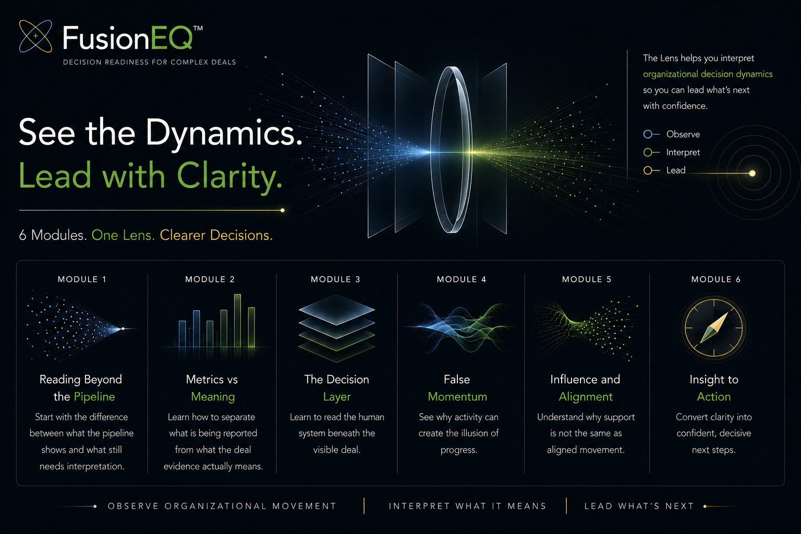

Focus
What actually matters now?
Fusion: Where Emotional Intelligence meets Artificial Intelligence
FusionEQ Enterprise Decision Dynamics Series™
A practical introduction to the hidden dynamics shaping enterprise decisions, and the foundation for learning how the FusionEQ Lens reads decision readiness.
Use it as an introductory foundations course before a Diagnostic Briefing, a team conversation, or a deeper decision dynamics training path.
Course Promise
FusionEQ does not replace CRM data or sales methodology. It helps sellers and leaders interpret what those systems do not always connect: alignment, influence, resistance, urgency, ownership, forecast distortion, and decision risk.
The FusionEQ Enterprise Decision Dynamics Series gives teams a practical way to start applying the FusionEQ Lens in active opportunity conversations.
FusionEQ doesn’t replace your judgment. It sharpens it.
FusionEQ Enterprise Decision Dynamics Series™

Six connected modules designed to help teams interpret organizational decision movement, alignment, and readiness more clearly.
Series Modules
Reading Beyond Pipeline Activity
Start with the difference between what the pipeline shows and what still needs interpretation.
Metrics vs. Meaning
Learn how to separate what is being reported from what the deal evidence actually means.
False Momentum
See why activity can make a deal look alive even when nothing is moving toward a decision.
Influence and Alignment
Understand why support is not influence and agreement is not alignment.
Insight to Action
Turn a sharper deal read into better next steps, earlier risk conversations, and stronger leadership questions.
FUSION Framework
What actually matters now?
What signals suggest something deeper?
Is the work progressing or only active?
Who can move the organization?
Who owns the decision and next step?
What needs to happen next?
This is the shared language behind the Deal Lens, Presentation Lens, and Diagnostic Briefing.
Expanded Course Topics
Forecast distortion How hidden decision risk starts before the forecast shows it.
Champion problem How to tell the difference between a good contact and real internal influence.
Hidden buying group How late stakeholders, quiet resistance, and uneven priorities reshape the deal.
Presentation impact How to tell whether a presentation created decision movement or only discussion.
Decision ownership How to look for the person, process, and next step that actually moves the outcome.
Sample readouts How to practice comparing the visible story with the FusionEQ read before applying it to live work.
Quick Deal Reflection
You do not need to answer every question. The point is to see where the visible story stops giving you enough confidence.
Visible story What does the CRM, seller update, or forecast call say is happening?
Evidence What buyer behavior proves the deal is moving toward a real decision?
Missing signal What has not been validated yet: urgency, authority, alignment, influence, or ownership?
Alignment risk Where might stakeholders be agreeing politely but interpreting the decision differently?
Champion strength Has the supporter created access, mobilized others, or changed the internal conversation?
Decision ownership Who owns the next move inside the buying group, not just the next meeting?
Next move What action would create more clarity before the next forecast update?
Common Misreads
Use these as quick pressure tests while moving through the modules.
Positive feedback can sound like commitment when the buyer has not accepted ownership for what happens next.
A responsive contact can keep the conversation alive without having the influence to move the organization.
Meetings, emails, and follow-ups can create motion while the actual decision remains fragmented or unowned.
Agreement can hide misalignment when stakeholders have different priorities, risk concerns, or definitions of success.
A next meeting is not decision progress unless it has a purpose, owner, and decision milestone attached to it.
A clean forecast can mask fragile evidence when urgency, authority, and internal movement have not been tested.
Practice Exercise
Choose a deal Pick one active opportunity that looks fine but feels uncertain.
Write the visible story Capture what the pipeline, CRM, or rep update says is happening.
Look for meaning Identify what the deal evidence actually supports and what still does not make sense.
Name the risk Decide whether the deal appears stable, at risk, or recovering.
Choose the action Define the next move that would improve alignment, influence, urgency, or decision clarity.
Best Fit
Outcome
The goal is not to become more certain. The goal is to see the deal more clearly while there is still time to change the outcome.
Use the foundations course to understand the Lens, then apply it to active opportunities through a team discussion, custom training path, or Diagnostic Briefing.